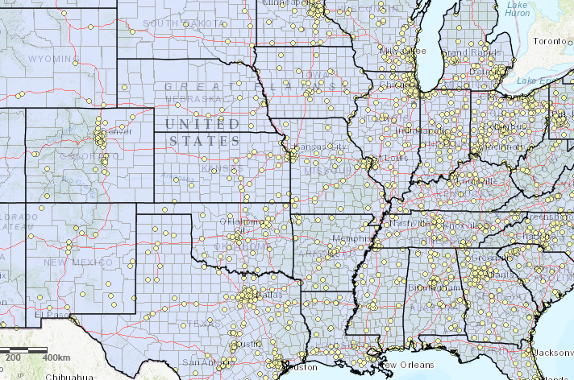

Visor de Cambio Climático para Centroamérica
ExplorarIguana Page - Landingpage informativa
ExplorarCuppon - Landingpage comercial
ExplorarVisor de terremotos en USA
 ExplorarCalculador de rutas
Explorar
Educación superior
M.Sc. Sistemas de Información Geográfica (SIG)
ESRI | Universidad Católica San Antonio de Murcia
Ene. 2022 - Jun. 2023
B.A. Relaciones Internacionales
Universidad Iberoamericana de la CIudad de México (IBERO)
Ene. 2018 - Jun. 2021
B.A. Geografía
Universidad Nacional Autónoma de México (UNAM)
Ene. 2018 - Oct. 2021
Carreras técnicas y especialidades
Full Stack con JavaScript
Desafío Latam - Bootcamp
May. 2023 - Abr. 2024
Esp. ArcGIS
Máster GIS
May. 2020 - Feb. 2021
Esp. Manejo y gestión de áreas naturales protegidas
Universidad Europea del Atlántico
Ago. 2020 - Jun. 2021
Contáctame
- +52 55 4388 1969
- mariana.ghoffmann18@gmail.com
- Ciudad de México, México